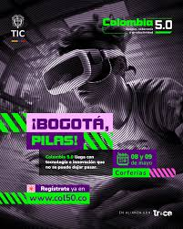
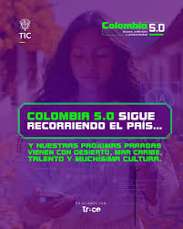
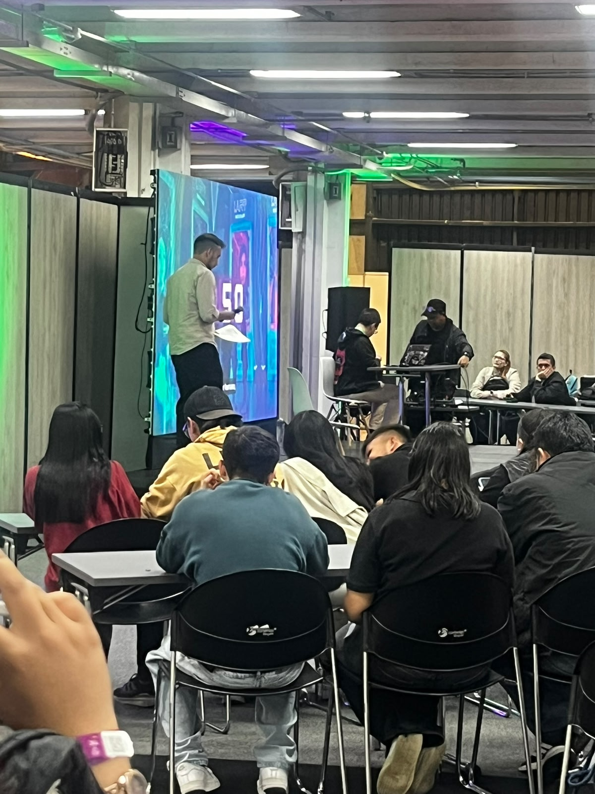
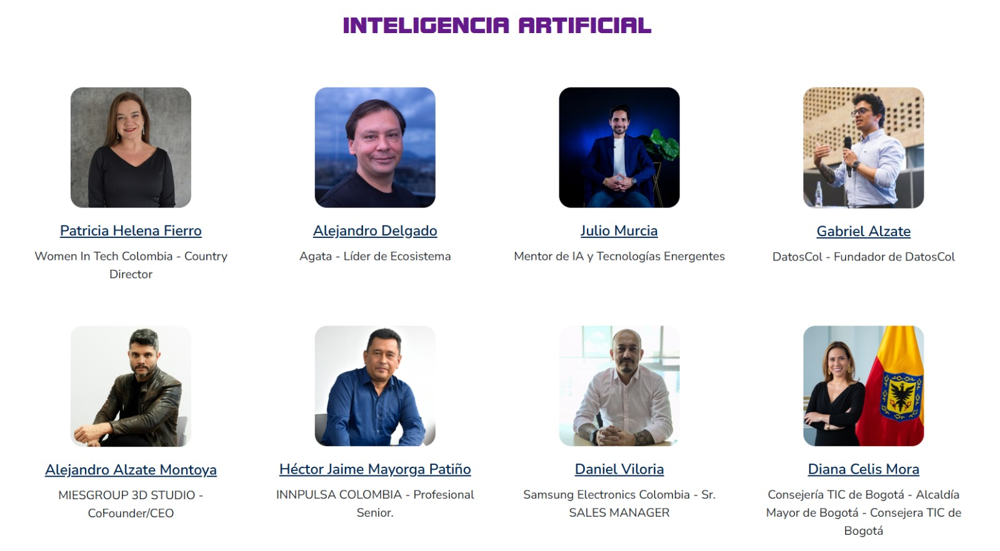
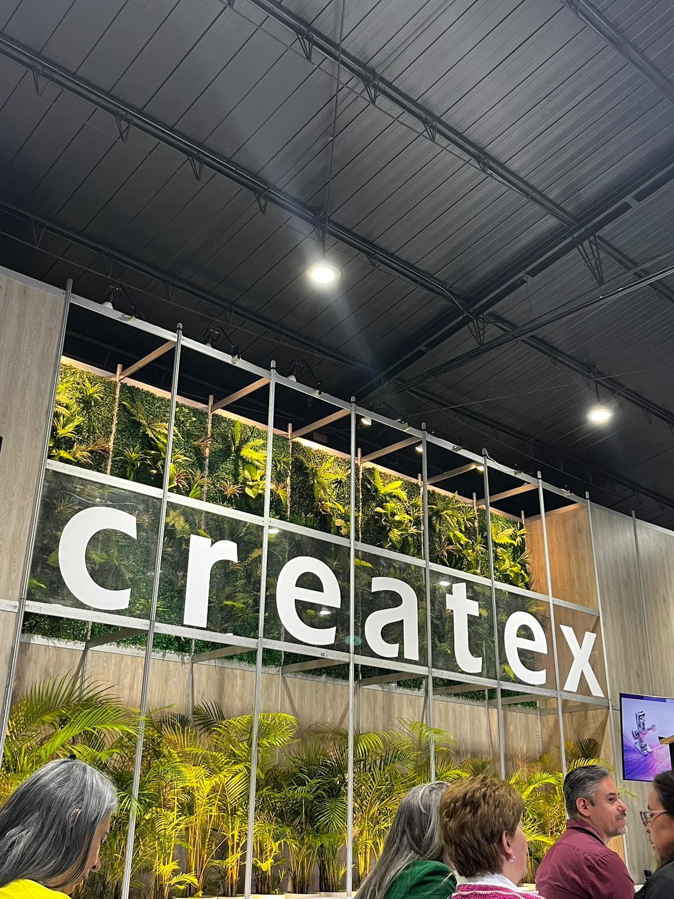
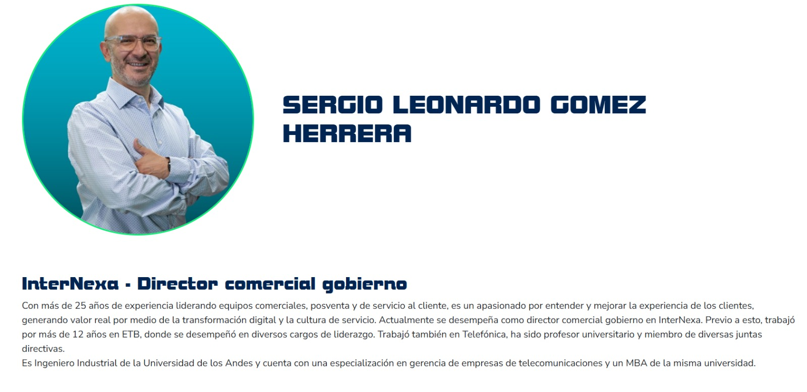

Evento nacional liderado por el Ministerio TIC para impulsar la
transformación digital, la innovación y el desarrollo tecnológico en Colombia.
National event led by the Ministry of ICT to promote digital transformation,
innovation, and technological development in Colombia.
¿Qué es Colombia 5.0?
Colombia 5.0 es la gran gira nacional liderada por el Ministerio TIC que busca impulsar
la transformación digital en Colombia mediante el acceso a nuevas tecnologías, la formación
de talento digital y el fortalecimiento de la innovación.
Colombia 5.0 is a major national tour led by the Ministry of Information and Communications
Technologies that aims to drive digital transformation in Colombia through access to new
technologies, digital talent development, and innovation.
Objetivo del Sitio Web / Website Objective
Este sitio web tiene como objetivo presentar los principales contenidos desarrollados durante
Colombia 5.0, destacando conferencias, tecnologías emergentes, transformación digital,
inteligencia artificial, innovación y desarrollo de competencias digitales.
This website aims to present the main content developed during Colombia 5.0, highlighting
conferences, emerging technologies, digital transformation, artificial intelligence, innovation,
and the development of digital skills.
Pilares Fundamentales / Fundamental Pillars
Acceso / Access
Acercar la tecnología a toda la ciudadanía fortaleciendo la conectividad digital.
Bringing technology closer to citizens by strengthening digital connectivity.

Productividad / Productivity
Impulsar el talento digital mediante formación en IA, videojuegos y robótica.
Driving digital talent through training in AI, video games, and robotics.

Soberanía / Sovereignty
Promover soluciones tecnológicas creadas en Colombia y Latinoamérica.
Promoting technology solutions created in Colombia and Latin America.
Galería del Evento

Conferencias Tecnológicas
Espacios de aprendizaje sobre innovación y transformación digital.
Technological conferences.

Charlas Académicas
Participación de expertos nacionales e internacionales.
Academic lectures featuring national and international experts.

Createx
Feria de la industria textil colombiana.
Colombian Textile Industry Fair
GAME UI SYSTEMS: De pantallas bonitas a interfaces que funcionan
Conferencista / Speaker
Andrés Felipe Pisso Tobar
Tema Principal
Diseño y desarrollo de sistemas de interfaz de usuario para videojuegos,
enfocados en la funcionalidad, navegación y experiencia del usuario.
Main Topic
Design and development of user interface systems for video games focused
on functionality, navigation, and user experience.
Resumen
La conferencia destacó la importancia de construir interfaces que no solo sean
atractivas visualmente, sino también funcionales y fáciles de usar.
Summary
The conference highlighted the importance of building interfaces that are not only
visually attractive, but also functional and easy to use.
Palabras Clave / Keywords
Game UI, User Interface, UX Design, Navigation, Video Games, Accessibility.
Tecnologías Libres: Tecnología, la clave para la soberanía y continuidad del servicio público

Conferencista / Speaker
Sergio Gómez Herrera
Tema Principal
Uso de tecnologías libres para fortalecer la soberanía tecnológica,
la independencia digital y la continuidad de los servicios públicos.
Main Topic
Use of free technologies to strengthen technological sovereignty,
digital independence, and public service continuity.
Resumen
La conferencia resaltó la importancia del software libre, los estándares abiertos
y la transformación digital para impulsar la innovación y la seguridad tecnológica.
Summary
The conference emphasized the importance of free software, open standards,
and digital transformation to promote innovation and technological security.
Palabras Clave / Keywords
Free Software, Open Source, Digital Transformation, Cybersecurity, Technological Sovereignty.
Glossary / Glosario Técnico
English
Español
Definición
Artificial Intelligence
Inteligencia Artificial
Tecnología que permite a las máquinas realizar tareas similares a la inteligencia humana.
Machine Learning
Aprendizaje Automático
Rama de la inteligencia artificial que aprende a partir de datos.
User Interface
Interfaz de Usuario
Conjunto de elementos visuales con los que interactúa el usuario.
User Experience
Experiencia de Usuario
Percepción y satisfacción del usuario al utilizar un producto digital.
Cloud Computing
Computación en la Nube
Servicios y recursos informáticos ofrecidos a través de internet.
Cybersecurity
Ciberseguridad
Protección de sistemas, redes y datos frente a amenazas digitales.
Open Source
Código Abierto
Software cuyo código fuente puede ser consultado y modificado libremente.
Free Software
Software Libre
Programa que puede utilizarse, estudiarse y modificarse sin restricciones.
Database
Base de Datos
Conjunto organizado de información almacenada digitalmente.
Algorithm
Algoritmo
Secuencia de pasos para resolver un problema o realizar una tarea.
Automation
Automatización
Uso de tecnología para ejecutar procesos sin intervención humana.
Big Data
Macrodatos
Grandes volúmenes de datos que requieren herramientas avanzadas de análisis.
Digital Transformation
Transformación Digital
Integración de tecnologías digitales en organizaciones y procesos.
Innovation
Innovación
Creación o mejora de productos, servicios o procesos tecnológicos.
Software Development
Desarrollo de Software
Proceso de diseño, creación y mantenimiento de programas informáticos.
Application
Aplicación
Programa diseñado para realizar tareas específicas para el usuario.
Server
Servidor
Equipo que proporciona servicios y recursos a otros dispositivos.
Network
Red
Conjunto de dispositivos conectados para intercambiar información.
Hardware
Hardware
Componentes físicos de un sistema informático.
Software
Software
Conjunto de programas y aplicaciones de un sistema.
Data Analytics
Análisis de Datos
Proceso de examinar información para obtener conclusiones útiles.
Virtual Reality
Realidad Virtual
Entorno digital simulado que permite experiencias inmersivas.
Augmented Reality
Realidad Aumentada
Tecnología que combina elementos virtuales con el entorno real.
Technological Sovereignty
Soberanía Tecnológica
Capacidad de un país para desarrollar y controlar sus propias tecnologías.
Digital Skills
Competencias Digitales
Conocimientos necesarios para utilizar tecnologías de forma efectiva.
Programming
Programación
Actividad de escribir instrucciones para que un computador ejecute tareas.
Web Development
Desarrollo Web
Creación y mantenimiento de sitios y aplicaciones web.
Responsive Design
Diseño Responsivo
Diseño que se adapta a diferentes tamaños de pantalla.
Digital Ecosystem
Ecosistema Digital
Conjunto de tecnologías, usuarios y servicios conectados digitalmente.
Data Privacy
Privacidad de Datos
Protección de la información personal de los usuarios.
Information Technology
Tecnologías de la Información
Herramientas y sistemas utilizados para gestionar información digital.
Conclusión y Reflexión Ética
Colombia 5.0 permite reflexionar sobre la importancia de aplicar la ética en la tecnología empresarial.
La inteligencia artificial, la automatización y el uso de datos deben implementarse de manera responsable,
transparente y segura.
El uso responsable de los datos protege la privacidad de las personas y fortalece la confianza digital.
Además, la automatización debe utilizarse para mejorar procesos sin afectar negativamente el bienestar social.
Conclusion and Ethical Reflection
Colombia 5.0 shows the importance of applying ethics in business technology.
Artificial intelligence, automation and data usage must be implemented responsibly,
transparently and securely.